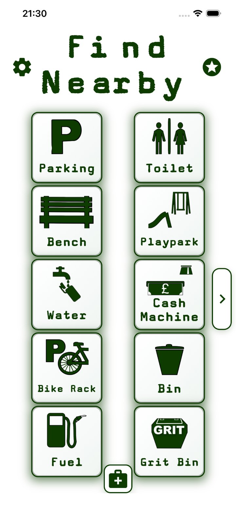
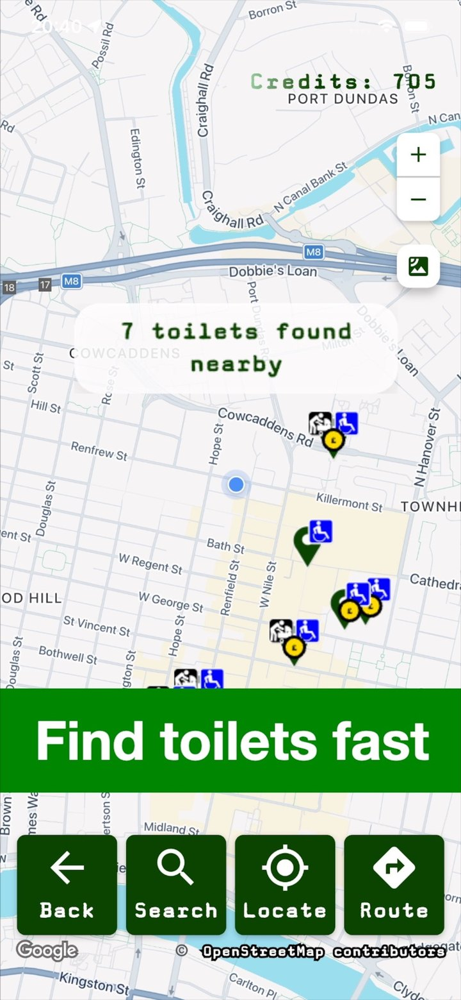
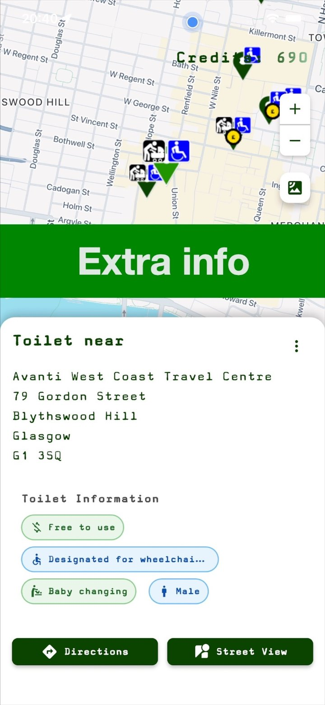

Find what you need fast
Search near your current location or look up another area before leaving home.
Need a toilet, parking space, bench, playpark, drinking water, defibrillator, GP, hospital, cash machine, chemist, bus stop or other useful place? Find Nearby helps you search quickly, with 1.16 million+ locations mapped across the UK and Ireland and worldwide search support using public map data where available.
Free to download. No sign-up required. Accessible toilets, disabled parking, baby-changing toilets, parent & child parking, hospitals, GPs and defibrillators are free with no ads. Optional ad-free Pro unlocks everything.



Find Nearby is built for families, disabled people, drivers, travellers, tourists and anyone who needs practical nearby places quickly. Search for toilets, accessible toilets, baby-changing toilets, parking, disabled parking, parent & child parking, playparks, benches, defibrillators, GPs, hospitals and more.
Search near your current location or look up another area before leaving home.
Useful for days out, long drives, unfamiliar towns, family trips and everyday journeys.
Find Nearby is a general-purpose finder, but key accessibility, family and health searches are kept free with no ads.
See results on the map, compare nearby options and get directions to the place you choose.
Find Nearby currently includes 1,165,337 mapped locations in its fast UK and Ireland coverage database, covering Scotland, England, Wales, Northern Ireland and the Republic of Ireland. Searches outside the UK and Ireland are also supported using public map data where available, but may be slower and less complete.
Find Nearby is a broad everyday finder, but some searches are kept free because they matter most in urgent, accessibility, family and healthcare situations.
Find Nearby uses public map data, including OpenStreetMap. If something is missing or wrong, improving OpenStreetMap directly or leaving an OpenStreetMap Note can help everyone who relies on public map data.
Find Nearby began as a simple idea to find a nearby bench more easily, then grew into an app designed to help people find useful public places with less stress and more confidence — with fast mapped results across the UK and Ireland and worldwide search support where public map data is available.